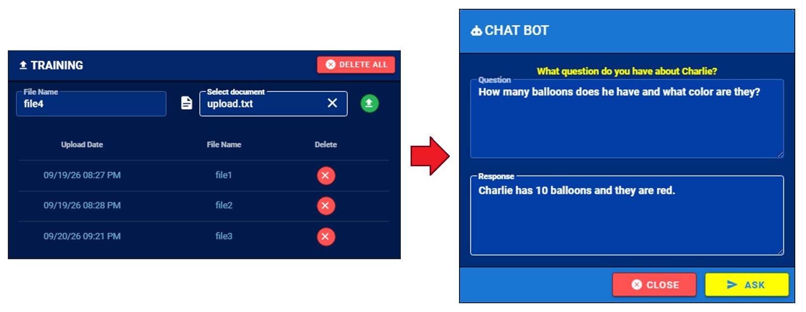

|
SOFTWARE (AI):
RELEVANT SOFTWARE: PROJECTS: Dan has experience using the OpenAI API to build chatbots that provide natural language responses to custom docs, help menus, and reports. Dan begins by pre-processing, filtering, and chunking those documents so that the LLMs provide high quality responses. He builds a frontend page so an admin can add or delete these training documents as necessary. Those documents are then sent through the OpenAI API to generate vector stores on the cloud. Dan then builds a frontend chatbot dialog so users can question those documents. Any time the chatbot is prompted, the prompt is sent to the OpenAI API along with the vector Ids it was trained on. Using the gpt-4o-mini model and RAG, the OpenAI API retrieves a response that is sent to the user. This process can allow a user to answer the following help-menu questions about an app:
 Figure 19.1: Interfaces Dan built for AI training and AI prompting. |